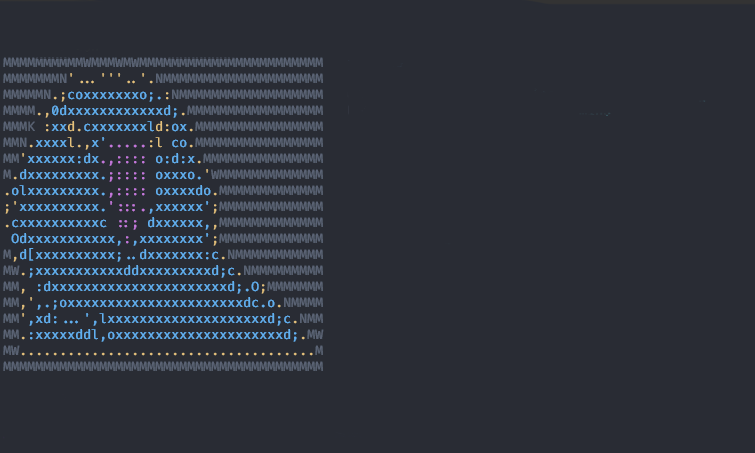

<div id="single-portfolio">
	<div id="portfolio-details" class="container">
		<a class="close-folio-item" href="#"><i class="fa fa-times"></i></a>
		
		<div class="row">
			<div class="col-sm-9">
				<div class="project-info">
					<h3>Пакет CLI програм</h3>
					<p>Пакет CLI програм для Popuginux и находящейся в разработке KaikOs</p>
					<p>В пакет програм входит: Калькулятор, текстовый редактор, несколько простых консольных игр таких как змейка, собачка и несколько других. А также десяток системных утилит</p>
				</div>
			</div>
			<div class="col-sm-3">
				<div class="project-details">
					<h3>Детали проекта</h3>
					<p><span>Цель </span>Создание программ для Kaik Os</p>
					<p><span>Начало проекта</span> 8-9-15</p>
					<p><span>Тип</span> ПО</p>
				</div>  
			</div>
		</div>
	</div>
</div>